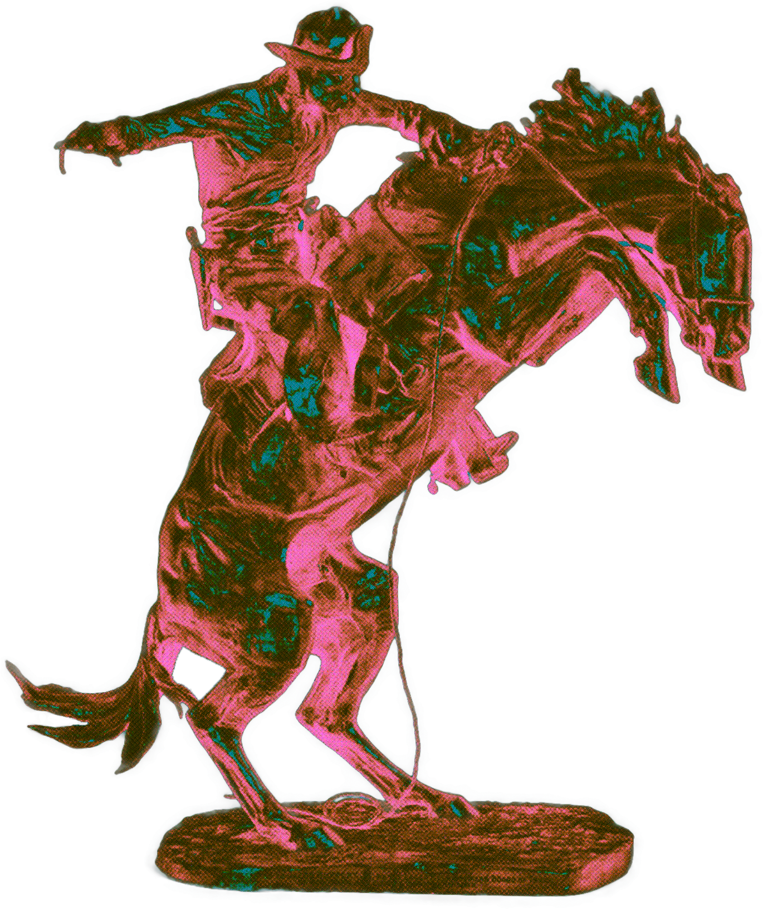

Saving Screen Time is a research project exploring how New Zealanders with Attention Deficit Hyperactivity Disorder experience and manage their internet use. We are investigating inclusive and practical disconnection strategies.
This project uses the theoretical framework of crip time to examine the interrelationship between people, digital technologies, temporality, and social norms around productivity. Crip time is about bending the clock to suit disabled bodies and minds, rather than forcing disabled bodies and minds to meet the clock.
